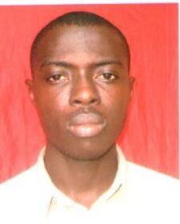

|  |
Adewuyi Uthman AlaoFounder and CEO of Zucchini inc.I write java code and i am also an Andriod and web developer, and i love coding and brainstorming very early in the morning |
To work with a reputable establishment, where I will play a major role in the advancement
of the establishment and to receive continuing education in the field to stay up to date
on current techniques and procedures.
|
: Male |
|
: Single. |
|
: Nigeria. |
|
: English, Yoruba, Arabic, and Spanish. |
|
: Kwara State. |
|
: 27/08/1992. |
| School | Certificate | Date |
|---|---|---|
| Federal University of Ilorin, Kwara State. | B.Sc. Computer Science | In View. |
| Ilorin Business School, University of Ilorin, Kwara State. | Diploma In Computer Science. | 2017. |
| God's Blessings International School, Lagos State. | WAEC (West African Examination Council) Certificate. | 2012. |
| Oshodi Senior High School, Oshodi, Lagos State. | Secondary School Testimonial. | 2008. |
| Gbolahan Nursery and Primary School, Oshodi, Lagos State. | First School Leaving Certificate (FSLC). | 2002. |
| Photography | ⭐⭐⭐⭐⭐ |
| Desktop Publishing | ⭐⭐⭐⭐⭐ |
| Computer System Troubleshooting | ⭐⭐⭐⭐⭐ |
| Web Development | ⭐⭐⭐⭐⭐ |
| Mobile App Development(Android/IOS) | ⭐⭐⭐⭐⭐ |
| Network Engineering | ⭐⭐⭐⭐⭐ |
| Dates | Work |
| 2009-2010 | IT support at Qualiah Computer. |
| 2010-2011 | Apprentice at Bolfos Tech. |
| 2013-2015 | Apprentice at Candela Networks. |
| 2017-till date | Technical team at Mutotech Nigeria Limited |
| Integrity: | Acting honestly, sincerely and upholding ethical standards. |
| Discipline: | Knowing and abiding with the Do's and don't's. |
| Accountability: | Taking responsibility for one's action and inaction. |
| Networking: | Meeting new people and creating value. |
| Oneness: | Imbibing team spirit when dealing with people. |